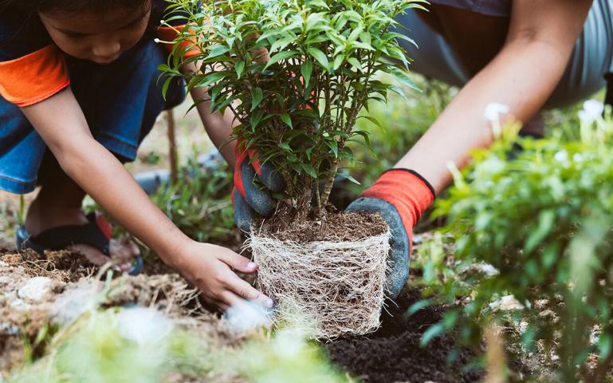

Forest and City là một tổ chức giúp hồi sinh những khu rừng tự nhiên, bằng cách khuyến khích người dân sinh sống tại thành phố, gieo trồng hạt giống của thực vật thân gỗ tại nhà, sau khi cây con đủ lớn, hoặc vượt quá chiều cao cho phép trong căn hộ chung cư hoặc khoảng sân trước vườn nhà, bạn sẽ đăng kí đem cây con của mình về những khu rừng nghèo kiệt để trồng như một cách giúp rừng thêm cây.
Forest and City chọn người dân sinh sống tại thành phố để phát triển dự án trồng rừng này với mong muốn tăng mảng xanh trong thành phố, giảm khí thải ô nhiễm mỗi ngày. Ngoài ra, còn giúp mọi người ý thức việc khôi phục và bảo vệ thiên nhiên.
Vì sao Forest and City chọn trồng những cây thân gỗ? Vì những cây thân gỗ phát triển sẽ giúp đất giữ nước, giảm tình trạng lũ lụt và sạt lở đầu nguồn, giữ độ ẩm cho đất, từ đó tạo điều kiện phát triển những thực vật táng vừa và thấp. Thêm vào đó, trồng những thực vật thân gỗ khác loài sẽ giúp đa dạng hệ thực vật kéo theo hệ sinh thái của rừng cũng đa dạng theo. Kết quả, rừng sẽ hồi phục mỗi ngày, trả lại RỪNG VÀNG như thiên nhiên đã từng tươi đẹp.
Tham gia cùng chúng tôi sẽ mang lại nhiều lợi ích cho bạn, cho các thành viên trong gia đình và cho chính ngôi nhà của bạn. Trồng cây tạo thêm mảng xanh, không khí mát mẻ trong nhà, cũng có thể trang trí cho ngôi nhà thêm sinh khí, giảm bớt khí thải cho môi trường đang sinh sống. Ngoài ra, bạn và gia đình có thêm kiến thức và kinh nghiệm về thực vật, giúp các con của mình biết được cách chăm sóc cây, mục đích trồng cây, lợi ích cây mang lại và cho các con biết được chúng ta cần phải bảo vệ cây và bảo vệ rừng tự nhiên.
"Plan Tree for the future"